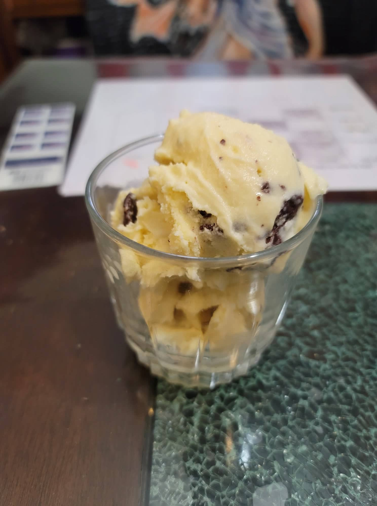

Stracciatella Gelato

Ingredients:
- 2 cups Milk
- 3/4 cup Sugar
- 4 Egg yolks
- 1 cup Heavy cream
- 1 tsp Vanilla extract
- 4 oz Bittersweet chocolate, chopped
Instructions:
- Heat the milk in a pot over medium-low heat. Do not let the milk come to a boil. While it heats up, whisk together the sugar and egg yolks in a separate bowl until homogenous.
- Pour 1/4 cup of the heated milk into the eggs while whisking constantly. Then pour the egg yolk mixture back into the pot while whisking the pot constantly.
- Continue to slowly heat the milk while whisking constantly until the milk reaches 170 degrees Fahrenheit. Then immediately remove from heat and place the pot into an ice bath.
- Into a separate bowl, place the heavy cream and vanilla extract. Then whisk in the milk mixture until homogenous. Let chill in the fridge completely.
- Pour the mixture into an ice cream machine and let churn for about 40 minutes.
- During the last few minutes of churning, melt the chocolate in a separate bowl, either with a double boiler or in the microwave. Once completely liquid, slowly drizzle the chocolate into the ice cream machine.
- Once done churning, place into a freezer and let firm up overnight. Serve cold.